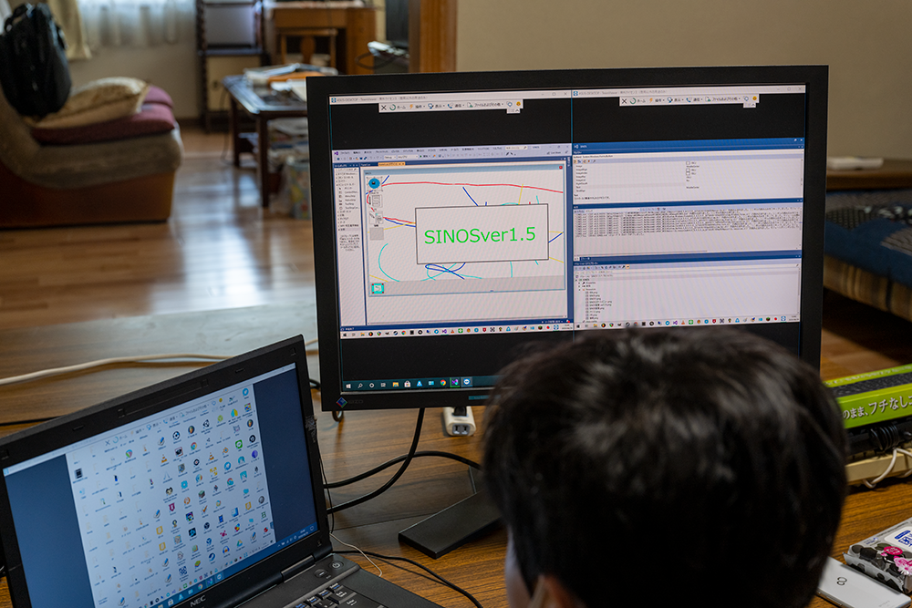

次回開催は2020年9月19日(土)12:00〜になります。
参加予約は下記よりお願いいたします。
DoorKeeper CoderDojo松山予約サイト
住所：799−2652 愛媛県松山市福角町626-2
会員制寄合所 郷屋
 Google MAP リンク
Google MAP リンク
道路脇で、目印も少なく分かりづらいです。お気軽に下記まで電話頂ければ幸いです。
到達率 約30％
PH連絡先
090-8283-3895(佐伯)
次回の予定ですが、少しお願いがあります。
実は、別件で申し込んでいたオンラインセミナーがCoderDojo松山とほぼ時間帯でありますが、その場で参加させて頂ければと思います。
内容としてはEnOceanさんのほぼほぼ無電力で利用できるセンサーの講習で、参加者の皆さんのネタにもなりそうなものです。
EnOcean IoTシステム開発コンテスト！
https://algyan.connpass.com/event/183265/
みんながやってる横で参加する予定ですので楽しみにしていてね。
参加者は、小学生2名、中学生2名の4名での開催です。
前回壊れたラジコンを、大会参加時にユカイ工学さんから頂いたコントローラを使って動かすように、小学校4年生の男の子と一緒にラジコン改造するため、半田付けなど実施。
これは無事完成！・・・ただこのままじゃ終わらない。プログラミングになってないし・・・。
次回は、ESP32マイコンを使って、スマホでコントロールできるように改造することに取り組みますよ。
そのほか、C#で怪しげなOSが着々と生まれてます。

怪しげなロボット・・・も！！
CoderDojoは、7〜17歳の子供を対象にしたプログラミング道場です。アイルランドで2011年にはじまり、世界中に広まっています。
日本でも、CoderDojoJapanが2016年開設され、現在200以上の道場が現在開設されています。
CoderDojoJapan
CoderDojo松山では、2020年から ”
へんなものづくり” を目指して、Scratch、Unityなどのプログラミング環境だけではなく、マイコン、レーザカッター、3Dプリンタなど幅広く対応しようと考えています。
注意点
CoderDojo松山では以下のことに気をつけてくださいね。
- "塾"じゃないです。
- 最初以外は、やりたいことは自分で決めて
- ”相談”はなんでもOK・・・答えられる範囲でね